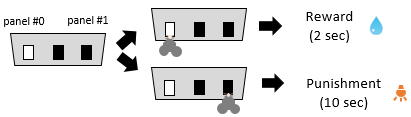
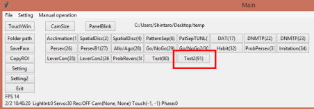
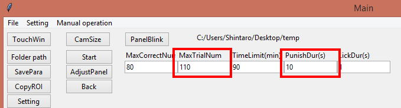
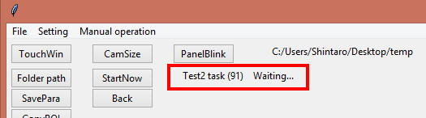
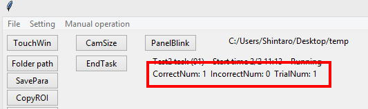
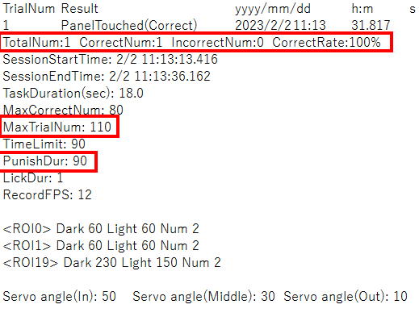

7. Modifying Code part1
This chapter explains how to add a new task (task 91) where the right or left panel is lit and touching the lit panel is rewarded while the touching of the non-lit panel is punished.

=================================================================================================
def PutTaskButton():
ButtonWidth = 12
Row=0
・・・
bTask50 = ttk.Button(MainWindowRightFrame, text='ProbRevers(50)', command=functools.partial(SwitchToSelectedTask, 50), width=ButtonWidth).grid(row=Row, column=Column)
Column += 1
bTask90 = ttk.Button(MainWindowRightFrame, text='Test(90)', command=functools.partial(SwitchToSelectedTask, 90), width=ButtonWidth).grid(row=Row, column=Column)
Column += 1
bTask91 = ttk.Button(MainWindowRightFrame, text='Test2(91)', command=functools.partial(SwitchToSelectedTask, 91), width=ButtonWidth).grid(row=Row, column=Column)
return
=================================================================================================
First, create a button for the task 91 in the task selection with the following code (the blue code is the additional part),
The task #91 is added.

=================================================================================================
def SwitchToSelectedTask(ChosenTask): # Initialize for the starting of the task
global Task, Phase, DispVariable
Task = ChosenTask
・・・
Task50()
if Task == 90:
Task90()
if Task == 91:
Task91()
return
=================================================================================================
Next, add a code which is executed when the new button is clicked,
Now it jumps to the task 91 function when the task 91 button is clicked. Next step is an addition of the task #91 function. Copy and pastethe task 90 as a base of the task 91 as shown below.
=================================================================================================
def Task90(): # Test task
global Phase
Phase0_Init = 0
・・・
SetDispVariable(0, 'Phase2', str(Phase2)) # Display "Phase2" value on the bottom of main window
return
def Task91(): # Test2 task
global Phase
Phase0_Init = 0
・・・
SetDispVariable(0, 'Phase2', str(Phase2)) # Display "Phase2" value on the bottom of main window
return
def StartRecording(): # Start camera caputring
=================================================================================================
This task has additional 2 task parameters so add those parameters to the code and change the position of other task buttons accordingly.
=================================================================================================
MaxCorrectNumVar = IntVar(MainWindowRoot) # Declare a variable for input column
iMaxCorrectNum = ttk.Entry(MainWindowRightFrame, textvariable=MaxCorrectNumVar, width=ColumnWidth).grid(row=1, column=0) #Create input column and link it with the variable
mMaxTrialNum = ttk.Label(MainWindowRightFrame, text='MaxTrialNum', width=ColumnWidth).grid(row=0, column=1, sticky=W)
MaxTrialNumVar = IntVar(MainWindowRoot) # Declare a variable for input column
iMaxTrialNum = ttk.Entry(MainWindowRightFrame, textvariable=MaxTrialNumVar, width=ColumnWidth).grid(row=1, column=1)
mTimeLimit = ttk.Label(MainWindowRightFrame, text='TimeLimit(min)', width=ColumnWidth).grid(row=0, column=2, sticky=W)
TimeLimitVar = IntVar(MainWindowRoot)
iTimeLimit = ttk.Entry(MainWindowRightFrame, textvariable=TimeLimitVar, width=ColumnWidth).grid(row=1, column=2)
mPunishDur = ttk.Label(MainWindowRightFrame, text='PunishDur(s)', width=ColumnWidth).grid(row=0, column=3, sticky=W)
PunishDurVar = IntVar(MainWindowRoot)
iPunishDur = ttk.Entry(MainWindowRightFrame, textvariable=PunishDurVar, width=ColumnWidth).grid(row=1, column=3)
mLickDur = ttk.Label(MainWindowRightFrame, text='LickDur(s)', width=ColumnWidth).grid(row=0, column=4, sticky=W)
LickDurVar = IntVar(MainWindowRoot)
iLickDur = ttk.Entry(MainWindowRightFrame, textvariable=LickDurVar, width=ColumnWidth).grid(row=1, column=4)
=================================================================================================
Now those 2 entries are implemented.

Add the load process for the new parameters.
=================================================================================================
else: # If save file doesn't exist
MaxCorrectNumVar.set(80) # Assign 80 into the variable
if os.path.exists(Str + '/MaxTrialNum.dat') == True:
with open(Str + '/MaxTrialNum.dat', 'rb') as PickleInst[GetTaskID()]:
MaxTrialNumVar.set(pickle.load(PickleInst[GetTaskID()]))
else:
MaxTrialNumVar.set(110)
if os.path.exists(Str + '/TimeLimit.dat') == True:
with open(Str + '/TimeLimit.dat', 'rb') as PickleInst[GetTaskID()]:
TimeLimitVar.set(pickle.load(PickleInst[GetTaskID()]))
else:
TimeLimitVar.set(600)
if os.path.exists(Str + '/PunishDur.dat') == True:
with open(Str + '/PunishDur.dat', 'rb') as PickleInst[GetTaskID()]:
PunishDurVar.set(pickle.load(PickleInst[GetTaskID()]))
else:
PunishDurVar.set(10)
if os.path.exists(Str + '/LickDur.dat') == True:
with open(Str + '/LickDur.dat', 'rb') as PickleInst[GetTaskID()]:
=================================================================================================
This task uses two panels so add a new ROI for the additional panel.
=================================================================================================
PutRoiGui(0, 1, 1, 0) # Put setting GUI of the indicated ROI on ROI window (ROI number, Detection mode, Threshold direction, ShowSymbolor not)
PutRoiGui(1, 1, 1, 0)
PutRoiGui(19, 0, 0, 1)
=================================================================================================
Add the save process for the new task parameters.
=================================================================================================
with open(Str+'/MaxCorrectNum.dat', 'wb') as PickleInst[GetTaskID()]:
pickle.dump(MaxCorrectNumVar.get(),PickleInst[GetTaskID()]) # Save a value of "MaxCorrectNumVar" as "MaxCorrectNum.dat" file
with open(Str+'/MaxTrialNum.dat', 'wb') as PickleInst[GetTaskID()]:
pickle.dump(MaxTrialNumVar.get(),PickleInst[GetTaskID()]) # Save a value of "MaxCorrectNumVar" as "MaxCorrectNum.dat"file
with open(Str+'/TimeLimit.dat', 'wb') as PickleInst[GetTaskID()]:
pickle.dump(TimeLimitVar.get(),PickleInst[GetTaskID()])
with open(Str+'/PunishDur.dat', 'wb') as PickleInst[GetTaskID()]:
pickle.dump(PunishDurVar.get(), PickleInst[GetTaskID()])
with open(Str+'/LickDur.dat', 'wb') as PickleInst[GetTaskID()]:
pickle.dump(LickDurVar.get(), PickleInst[GetTaskID()])
=================================================================================================
Change the message to show “Test2 task (91)”
=================================================================================================
if Phase == 1: # Waiting phase (Task will start when the set time arrives)
if Phase1_Init == 0: # If the initialization for phase1 has not done
PutPreTaskButton() # Put "StartNow" and "Back" button on Main window
mStatusVar = StringVar(MainWindowRoot) # Create a variable for status display
mStatus = ttk.Label(MainWindowRightFrame, textvariable=mStatusVar) # Create label object and link it with Main window
mStatus.place(x=10, y=0) # Place label object on the Main window
mOngoingResultVar = StringVar(MainWindowRoot) # Create a variable for progress display
Phase1_Init = 1 # Flat that phase1 has done
mStatusVar.set('Test2 task(' + str(GetTaskID()) + ') Waiting...') # Show current status of the Operant House
if IsStartTime() == 1: # Check whether task start time arrives
StartNow() # Start task (Phase number will be "2")
=================================================================================================

Do the same in Phase == 2.
=================================================================================================
if Phase == 2: # If it is during task
if Phase2_Init == 0: # Initialization of the task
PutEndTaskNowButton() # Put "TaskEnd" button on Main window
mStatusVar.set('Test2 task(' + str(GetTaskID()) + ') Start time ' + str(TaskStartedMonth) + '/' + str(TaskStartedDay) + ' ' + str(TaskStartedHour) + ':' + str(TaskStartedMinute) + ' Running') # Assign latest information about current task into "mStatusVar"
mOngoingResult = ttk.Label(MainWindowRightFrame, textvariable=mOngoingResultVar)
mOngoingResult.place(x=10, y=18)
=================================================================================================
Add new variables for the new task parameters.
=================================================================================================
# Assign task parameter values in StringVars into integer or string variable (to make the cord easeir to read)
MaxCorrectNum = int(MaxCorrectNumVar.get()) # Get the value of "MaxCorrectNumVar" and convert it from string to integerand assign into variable named "MaxCorrectNum"
MaxTrialNum = int(MaxTrialNumVar.get())
TimeLimit = int(TimeLimitVar.get())
PunishDur = int(PunishDurVar.get())
LickDur = int(LickDurVar.get())
=================================================================================================
This task needs additional variables which hold total/incorrect trial numbers and an ID of the current correct panel.
=================================================================================================
# Declar local variables for this task
TrialNum = 0 # Current trial number
CorrectNum = 0 # Current correct trial number
IncorrectNum = 0 # Current incorrect trial number
CorrectRate = 0.0 # Current correct rate
TaskDur = 0 # This will keep the elapsed time during of task
NowDrinking = 0 # Use as trigger
CorrectPanelID = 0 # ID number of current correct panel (0 or 1)
StartRecording() # Start camera capture / TTL signal output
StartLickRecording() # Start an entry of lick log
LightCycleControlOff() # Deactivate automatic Light/Dark cycle illumination
RoofLightOff() # Turn off the lights on roof (Digital output Ch13)
InfraredLightOn() # Turn on the infrared LED illumination (Digital output Ch12)
DigitalOutOn(10) # Turn on cue LED connected to Ch10
ServoPosInside(3) # Change the angle of water arm servo connected to Ch3 to inside position
CreateNormalPanel(0) # Create a white-filled square panel as panel #0
=================================================================================================
Add a command to generate the additional panel.
=================================================================================================
CreateNormalPanel(1)
Writer_TouchEventTxt = open(Path + "/" + str(TimeNow.year) + "_" + str(TimeNow.month) + "_" + str(TimeNow.day) + " " + str(TimeNow.hour) + "h" + str(TimeNow.minute) + "m Task" + str(GetTaskID()) + " Touch.txt", 'w') # Initialize the text exporter for a resultfile
Writer_TouchEventTxt.write('TrialNum\tResult\t\t\tyyyy/mm/dd\th:m\ts\n') # Write item name on the result file
Writer_TouchEventCsv = open(Path + "/" + str(TimeNow.year) + "_" + str(TimeNow.month) + "_" + str(TimeNow.day) + " " + str(TimeNow.hour) + "h" + str(TimeNow.minute) + "m Task" + str(GetTaskID()) + " Touch.csv", 'w')
print("Task #" + str(GetTaskID()) + " is started at " + str(GetTaskStartedMonth()) + '/' + str(GetTaskStartedDay()) + ' ' + str(GetTaskStartedHour()) + ':' + str(GetTaskStartedMinute()) + ':' + str(GetTaskStartedSecond())) # Enter the start time in the consolewindow of Pycharm
Timer_Start(5) # Start a timer #5 to measure the duration of the task
Phase2 = 2 # Start task from the reward phase
Phase2_Init = 1 # Flag indicating that initialization of Phase2 has done
if Phase2 == 0: # Initiation of new trial
TaskDur = Timer_GetSec(5)
=================================================================================================
=================================================================================================
CorrectPanelID = int(random.random()*2) # Determine which panel will be assigned as "correct"
print('CorrectPanelID: ' + str(CorrectPanelID))
ShowPanel(CorrectPanelID) # Display panel #0
Phase2 = 1
=================================================================================================
The correct and incorrect panel is assigned randomly. Hererandom.random()is used to generate “0” or “1” to determine which panelshould be the correct panel. To generate “0” or “1” with the same probability, userandom.random()to generate a random real number (? 0and <1). Then multiply it by 2 and round down by converting to an integer. Show the randomly chosen panel withShowPanel().Then movetoPhase2 == 1.
=================================================================================================
if Phase2 == 1: # Panel presentation
TouchedPanelID = DetectRoiNosepoke() # Examine which panel is touched (return panel ID. If none of the panels touched,return -1)
if TouchedPanelID != -1 and TouchedPanelID != 19: # If mouse touches the panel
TrialNum += 1
=================================================================================================
To count the number of touching (= trial number), increase the TrialNum when DetectRoiNosepoke() returns a value other than -1 and 19(-1 is returned when there is no ROI detecting. 19 is returned when the water slit ROI detects the animal).
If the ROI for the correct panel is activated, make it to the reward phase state and log the correct response and go to the reward phase(Phase2 = 2).
=================================================================================================
if TouchedPanelID == CorrectPanelID: # If touched panel is assigned as correct
ServoPosInside(3) # Move the water nozzle into inside position
DigitalOutOn(10) # Onset cue light
HidePanel(0) # Turn off panel #0
HidePanel(1) # Turn off panel #1
NowDrinking = 0
CorrectNum += 1 # Increase the number of correct response
Writer_TouchEventTxt.write(str(TrialNum)+'\tPanelTouched(Correct)\t'+ str(TimeNow.year)+"/"+str(TimeNow.month)+"/"+str(TimeNow.day)+"\t"+str(TimeNow.hour)+":"+str(TimeNow.minute)+"\t"+str(TimeNow.second)+"."+str(TimeNow.microsecond//1000)+"\n") # Write the response on the text file
Writer_TouchEventCsv.write(str(TrialNum) + ',1,' + str(TimeNow.year) + "," + str(TimeNow.month) + "," + str(TimeNow.day)+ "," + str(TimeNow.hour) + "," + str(TimeNow.minute) + "," + str(TimeNow.second) + "." + str(TimeNow.microsecond//1000)+"\n") #Write the response on the csv file
Phase2 = 2 # Start reward phase
=================================================================================================
The next code is for the case of an incorrect response.
=================================================================================================
if TouchedPanelID != CorrectPanelID: # If touched panel is assigned as incorrect
ServoPosOutside(3) # Move the water nozzle into inside position
HidePanel(0)
HidePanel(1)
RoofLightOn() # Turn on the ceiling illumination
IncorrectNum += 1 # Increase the number of correct response
Writer_TouchEventTxt.write(str(TrialNum)+'\tPanelTouched(Incorrect)\t'+ str(TimeNow.year)+"/"+str(TimeNow.month)+"/"+str(TimeNow.day)+"\t"+str(TimeNow.hour)+":"+str(TimeNow.minute)+"\t"+str(TimeNow.second)+"."+str(TimeNow.microsecond//1000)+"\n") # Write the response on the text file
Writer_TouchEventCsv.write(str(TrialNum) + ',2,' + str(TimeNow.year) + "," + str(TimeNow.month) + "," + str(TimeNow.day)+ "," + str(TimeNow.hour) + "," + str(TimeNow.minute) + "," + str(TimeNow.second) + "." + str(TimeNow.microsecond//1000)+"\n") #Write the response on the csv file
Timer_Start(0) # Start punishment timer
Phase2 = 3 # Start punish phase
=================================================================================================
For the punishment, the ceiling illumination are turned on. The incorrect number is increased and this event is logged to the result textfile. Start timer #0 withTimer_Start(0)to apply the punishment for a specified amount of time. Then move to the punishment phase (Phase2==3).
=================================================================================================
mOngoingResultVar.set('CorrectNum: ' + str(CorrectNum) + ' IncorrectNum: ' + str(IncorrectNum) + ' TrialNum: ' + str(TrialNum))
if Timer_GetSec(5) >= TimeLimit * 60: # If time limit of the task comes
TaskDur = Timer_GetSec(5)
print("Time limit elapsed")
=================================================================================================
Show the correct, incorrect and total number of the trials as intermediate results in the main window using mOngoingResultVar.set().

=================================================================================================
if Phase2 == 2: # Reward phase
if DetectRoiNosepoke() == 19 and NowDrinking == 0: # If the mouse initiates nose poking
NowDrinking = 1
Timer_Start(0) # Start lick timer
if NowDrinking == 1: # If the nose poke has begun
if Timer_GetSec(0) >= LickDur: # If the nosepoke duration exceeds the lick duration
Timer_End(0) # End timer for measuring lick duration
ServoPosMiddle(3) # Move water nozzle back to the middle position
DigitalOutOff(10) # Turn off the cue LED
NowDrinking = 0
Phase2 = 4 # Go to After trial phase
=================================================================================================
After the reward or punishment phase, an "after trial phase" is added to determine whether to continue the session or not, so add a line togo to the after trial phase (Phase2 == 4) in the last of reward phase process.
=================================================================================================
if Phase2 == 3: # Punishment phase
if Timer_GetSec(0) >= PunishDur: # If punishment time is passed
Timer_End(0) # End punishment timer1
RoofLightOff()
ServoPosMiddle(3) # Move water nozzle to the intermediate position
Phase2 = 4 # Go to After trial phase
=================================================================================================
Add a process of the punishment phase that keeps checking the elapse of the punishment time usingTimer_GetSec(0)and moves to the "after trial phase" when the time has elapsed.
=================================================================================================
if Phase2 == 4: # After trial phase
if CorrectNum < MaxCorrectNum and TrialNum < MaxTrialNum: # If the touch number doesn't exceed the maximum number
Phase2 = 0
if CorrectNum >= MaxCorrectNum or TrialNum >= MaxTrialNum: # If the touch number exceeds the maximum number
TaskDur = Timer_GetSec(5) # Keep the task time
Phase2 = -1 # Go to the task finalizing phase
=================================================================================================
Add the "after trial phase" after the punishment phase.This code checks whether the correct trials or total trials have reached the limits. If those limits have not been reached, it goes back to the initialization of the next trial. If the limit has reached, assigns the task lapsed time to the TaskDur and goes to the task end phase (Phase2 = -1).
=================================================================================================
if Phase2 == -1 or GetEndTaskNowButtonStat() == 1: # If the flag is set to finish the task
LightCycleControlOn() # Activate automatic light/dark cycle
ServoPosMiddle(3) # Moze servo nozzle into middle position
DeleteAllPanel() # Remove a panel on touch screen
InfraredLightOff() # Turn off the infrared LED
if GetRecordingStat() == 1: # If camera is capturing
SetEndRecordingTimer(60) # Onset a timer to finish video recording after 60 frames (correspond about 2sec) from now
# Add summary of results into the result file
if CorrectNum > 0 or IncorrectNum > 0:
CorrectRate = int(CorrectNum * 100.0 / TrialNum)
Writer_TouchEventTxt.write('TotalNum:' + str(TrialNum) + ' CorrectNum:' + str(CorrectNum) + ' IncorrectNum:' + str(IncorrectNum) + ' CorrectRate:' + str(CorrectRate) + '%\n')
Writer_TouchEventTxt.write('SessionStartTime: ' + str(GetTaskStartedMonth()) + '/' + str(GetTaskStartedDay()) + ' ' + str(GetTaskStartedHour()) + ':' + str(GetTaskStartedMinute()) + ':' + str(GetTaskStartedSecond()) + "\n")
Writer_TouchEventTxt.write('SessionEndTime: ' + str(TimeNow.month) + '/' + str(TimeNow.day) + ' ' + str(TimeNow.hour) + ':' +str(TimeNow.minute) + ':' + str(TimeNow.second + (TimeNow.microsecond // 1000) / 1000) + "\n")
Writer_TouchEventTxt.write('TaskDuration(sec): ' + str(TaskDur) + "\n")
# Add experimental conditions into the result file
Writer_TouchEventTxt.write('MaxCorrectNum: '+str(MaxCorrectNum)+"\n")
Writer_TouchEventTxt.write('MaxTrialNum: ' + str(MaxTrialNum) + "\n")
Writer_TouchEventTxt.write('TimeLimit: ' + str(TimeLimit) + "\n")
Writer_TouchEventTxt.write('PunishDur: ' + str(TimeLimit) + "\n")
Writer_TouchEventTxt.write('LickDur: ' + str(LickDur)+"\n")
Writer_TouchEventTxt.write('RecordFPS: ' + str(GetRecordFps()) + "\n") # Recorded frame number per second
Writer_TouchEventTxt.write(GetRoiSensitivity() + "\n") # Settings of each ROI
Writer_TouchEventTxt.write(GetServoAngle() + "\n") # Set angles of each servo
Writer_TouchEventTxt.close() # Close the text exporter for the result file
Writer_TouchEventCsv.close()
EndLickRecording() # End lick log recording
=================================================================================================
Modify the session termination process. Because there is a right and wrong response, addIncorrectNumandTrialNum.Also calculate thecorrect rate and record it to the result text. Add lines to record new task parameters (MaxTrialNumandPunishDur).

=================================================================================================
SendMail(DeviceNameVar.get()+' finished task '+str(GetTaskID())+'. TrialNum:'+str(TrialNum)+' Correct:'+str(CorrectNum)+'Incorrect:'+str(IncorrectNum)+' Rate:'+str(CorrectRate)+'% Dur:'+str(round(Timer_GetSec(5) / 60,1))+' min','The task is finished.') # Send aemail (correct number and task duration are added to email title)
Phase = 1 # Go back to the task-waiting phase
Phase2 = 0
Phase2_Init = 0
=================================================================================================
Finally include the new result parameters to the title of the email.
Task 91 is now complete. Please try it to see if it runs properly.
If you would like to see how Task 90 and 91 have changed, you can open Task 90 and 91 in the "Tutorial" folder in the OperantHouseprogram with WinMerge, which highlights differences between two source codes.